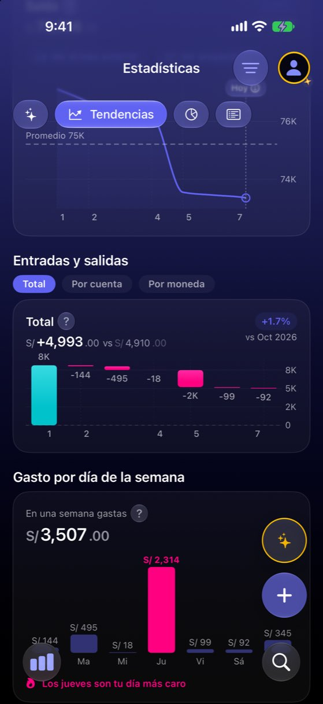
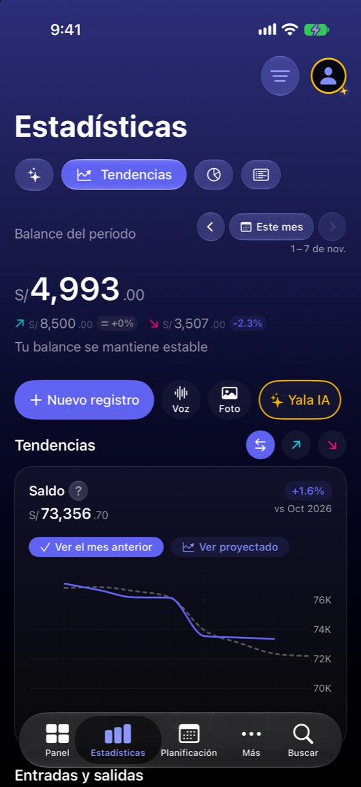
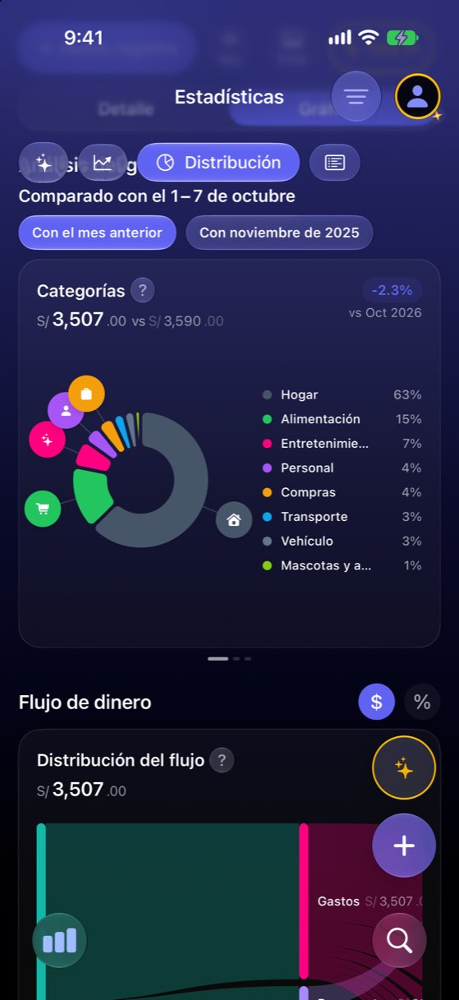
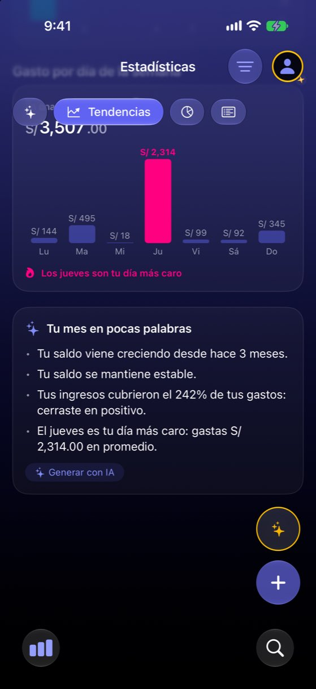

VoiceOver lee las gráficas como recuentos: «7 puntos», «7 categorías», sin valores
Hoy
Capturas del simulador (app de origin/2.3, semillas de prueba). Pasos hoy: La respuesta del caso no se puede oír en ninguna gráfica; solo en las filas de Distribución.




De dónde sale
- Medido Volcado del árbol de accesibilidad (
axe describe-ui) de Tendencias y Gráficas con la semilla «realista», 1–7 nov. - Código
TrendChartView.swift:358-361,PeriodComparisonChartView.swift:236-260,CategoriesPieWidget.swift:585-588,CashFlowWidget.swift:702-706: etiquetas con recuentos. - Código
WeekdayBarChart.swift:82-121: sin modificadores de accesibilidad; cada barra sale con la abreviatura y el número. - Código Único
accessibilityChartDescriptorde la app:CashFlowCellMiniChart.swift:155. - Hipótesis No se encendió VoiceOver en el simulador: el árbol es lo que lee. Probarlo en el iPhone antes de cerrar la decisión.
Las opciones
De 3 a 5 alternativas con el mismo caso. Desliza cada recorrido; el anillo cian marca dónde toca Ana.
La etiqueta dice la conclusión, con cifras
Cada gráfica se anuncia con lo que se ve en ella: de dónde a dónde fue, el punto más alto o más bajo y la comparación. La línea de saldo: «Saldo, del 1 al 7 de noviembre: bajó de S/ 76,100 a S/ 73,357. El punto más bajo, el día 7». La tarta: «Gastos por categoría: Hogar 63 %, Alimentación 15 %, Entretenimiento 7 % y 5 más».
Alimentación 15 %
Entretenimiento 7 %
…
A favor
- Lo que la persona necesita, en la primera lectura.
- Solo etiquetas: no cambia nada visible.
- La frase sale de los mismos datos que pinta la gráfica (no hace falta IA).
En contra
- Hay que escribir la frase para cada tipo de gráfica y caso (sin datos, un punto, varias monedas).
- No deja recorrer los puntos uno a uno (ver V2).
La descripción de gráficas de iOS (Audio Graph)
Cada gráfica de Swift Charts publica su descripción para el sistema. VoiceOver ofrece en el rotor «Describir gráfica» (ejes, rango, tendencia) y «Reproducir gráfica audio» (un tono que sube y baja con los valores). Es el estándar de Apple; hoy solo lo usa una gráfica de la app (la mini gráfica del flujo de caja).
A favor
- Lo da el sistema: ejes, rango y sonido sin escribirlos a mano.
- Recorre punto a punto con el gesto estándar.
En contra
- Hay que declarar la descripción en cada gráfica (seis tipos).
- Quien no conoce el rotor no lo encuentra; por eso va con V1.
«Ver como tabla» en cada gráfica
Un botón en la cabecera de cada gráfica cambia el dibujo por una tabla (día y monto, o categoría y monto) que VoiceOver lee fila a fila. Sirve también al que quiere copiar sus números.
| Lunes | S/ 144.00 |
| Martes | S/ 495.00 |
| Miércoles | S/ 18.00 |
| Jueves | S/ 2,314.00 |
| Viernes | S/ 99.00 |
| Sábado | S/ 92.00 |
| Domingo | S/ 345.00 |
A favor
- Funciona igual con VoiceOver, con texto grande y para quien prefiere números.
- Muy claro de construir.
En contra
- Un botón más en cada tarjeta.
- Con «Todo el tiempo» la tabla puede tener cientos de filas.
Un elemento por barra o punto, con moneda y nombre
Cada barra y cada punto es un elemento propio que dice día completo, monto con moneda y qué lo explica: «Jueves, S/ 2,314. Es tu día más caro: incluye el alquiler». Hoy las barras dicen «Ju, 2,314».
A favor
- Arreglo pequeño sobre lo que ya existe (las barras ya son elementos).
- Dice la razón, no solo el número.
En contra
- En una línea de 30 o 365 puntos son demasiados elementos: ahí necesita V2.
- Explicar «incluye el alquiler» pide lógica nueva.
Lado a lado
La última pantalla de cada recorrido, frente a hoy.
Alimentación 15 %
Entretenimiento 7 %
…
| Lunes | S/ 144.00 |
| Martes | S/ 495.00 |
| Miércoles | S/ 18.00 |
| Jueves | S/ 2,314.00 |
| Viernes | S/ 99.00 |
| Sábado | S/ 92.00 |
| Domingo | S/ 345.00 |
Comparación
| Opción | Pasos para el caso (maqueta) | Esfuerzo | Riesgo | Reabre |
|---|---|---|---|---|
| Hoy | La respuesta del caso no se puede oír en ninguna gráfica; solo en las filas de Distribución. | — | — | — |
| V1 · La etiqueta dice la conclusión, con cifras | 1 gesto: el foco en la gráfica | bajo-medio | bajo | — |
| V2 · La descripción de gráficas de iOS (Audio Graph) | 2 gestos (rotor + elegir) | medio | bajo | — |
| V3 · «Ver como tabla» en cada gráfica | 1 toque | medio | bajo | — |
| V4 · Un elemento por barra o punto, con moneda y nombre | 1 gesto por barra | medio | medio | — |
Lente de perfiles
Perfiles simulados, no entrevistas Los siete perfiles de la revisión del usuario nuevo, usados como lentes. riesgo alto de trabarse · medio · bajo.
| Perfil | Hoy | V1 | V2 | V3 | V4 |
|---|---|---|---|---|---|
| P1 · Migrante de Excel | — | — | — | su tabla | — |
| P2 · Principiante abrumado | — | — | — | — | — |
| P3 · Anotador rápido que no lee | — | — | — | — | — |
| P4 · Experto de otra app | — | — | — | — | — |
| P5 · Llega por una invitación de grupo | — | — | — | — | — |
| P6 · Varias monedas y tarjeta | — | con moneda | — | — | moneda |
| P7 · Texto grande, a veces en iPad | oye recuentos, no cifras | oye la respuesta | lo de Apple | fila a fila | — |
Recomendación: V1
V1 da la respuesta en la primera lectura con solo cambiar etiquetas; V2 añade lo estándar de Apple para quien quiere recorrer la gráfica. Juntas cubren a quien escucha. V3 es buena para todos pero es más pantalla; V4 se queda corta en gráficas largas.
Qué decide Jürgen
- ¿Etiquetas que dicen la conclusión con cifras (V1) en las seis gráficas?
- ¿Descripción de gráfica de iOS (V2)?
- ¿Se prueba con VoiceOver en el iPhone antes de cerrar, en la próxima tanda de QA?
Revisión por vistas 2.3 · Estadísticas. Maquetas en HTML con datos ficticios: no son la app. Pasos contados sobre las maquetas; los de «Hoy», en el simulador o en el código citado.